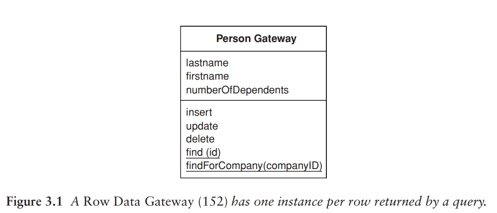
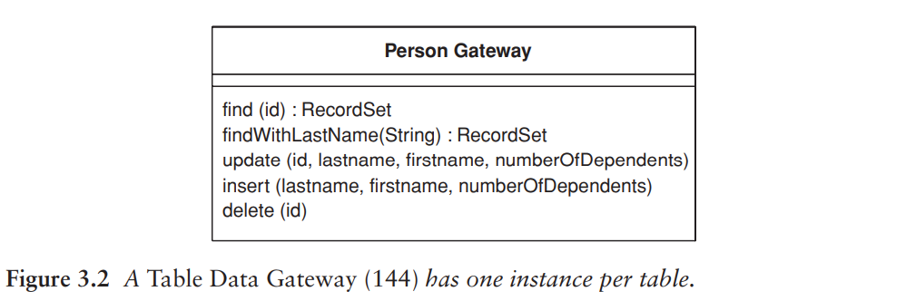
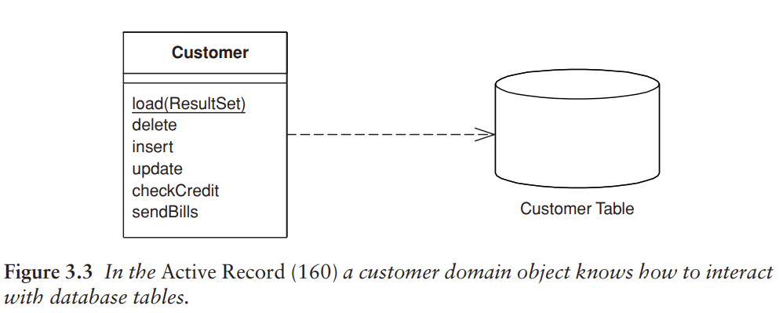
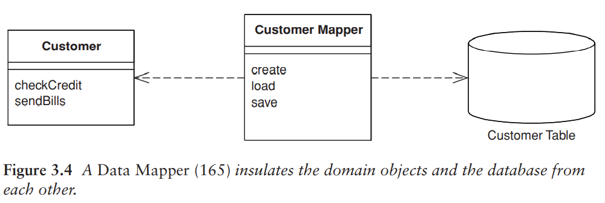

對應到關聯式資料庫¶
架構模式¶
SQL 很廣泛的使用，但有個陷阱：開發人員理解不足，無法建構良好的查詢 (query) 和指令 (command)。所以，一個明智的做法是把 SQL 存取從領域邏輯分離出來，放到單獨的類別。
- 以資料表為基礎來組織這些類別。每個資料庫資料表都對應一個類別。
- 這些類別形成資料表之間的 Gateway (Ch. 18)。
- 應用程式除了這些類別之外不需要知道 SQL 的存在。
使用 Gateway 有兩種主要方式：
- 讓查詢語句傳回的每個資料列都有一個執行個體。Row Data Gateway (Ch. 10) 是以物件導向的方式看待資料的適當方法之一。
- Record Set: 資料列和資料表的一種通用資料結構。使用 Record Set 的話，資料庫中每個資料表只需要對應一個物件。Table Data Gateway (Ch. 10) 提供查詢資料庫的方法，然後回傳 Record Set。
即使開發簡單的應用程式，也傾向使用其中一種閘道模式。


在簡單的應用程式中，Domain Model 是一個與資料非常相似的簡單結構，每一個資料庫的資料表都有一個對應的領域類別。這類領域物件的商業邏輯通常複雜度適中。這種情況下，讓每個物件負責從資料庫中 載入 和 儲存 是有意義的。這也就是 Active Record (Figure 3.3)。這種情況下，加入 Gateway 提供的 間接性 幫助不大。

隨著領域邏輯越來越複雜，Domain Model 也越來越豐富，此時簡單的 Active Record 開始不堪負荷。如果把領域邏輯分解成較小的類別時，領域類別 與 資料表 的對應開始失敗。關聯式資料庫不處理繼承，所以很難使用策略模式或其他較好的物件導向模式。隨著領域邏輯日益活躍，這時會希望不用存取資料庫就能隨時測試它。這種情況下會推動你使用 間接性。Gateway 可以解決一些問題，但它會留下一個與資料庫 schema 耦合的 Domain Model。結果就是會產生一些從 Gateway 欄位到領域物件欄位之間的轉換動作，這種轉換動作會讓領域物件變得複雜。
一個更好的途徑是把 Domain Model 與資料庫完全隔離，讓間接分層完全負責領域物件與資料庫資料表之間的對應關係。Data Mapper (Ch. 10) 負責處理資料庫和 Domain Model 之間所有載入和存取，且兩者都能獨立變化。它是最複雜的資料庫對應架構，但它好處是可以兩個層次之間完全隔離。

作者不建議使用 Gateway 作為 Domain Model 的主要持續性機制。
- 如果領域邏輯非常簡單、且類別與資料表之間的對應十分一致，那麼使用 Active Record 就非常足夠了。
- 如果領域邏輯更複雜，Data Mapper 才是你需要的。
持續性機制¶
這些模式不是完全互斥。大部分討論中，我們主要關心持續性機制。為此，將需要選擇這些模式中的其中一個，而且不希望將它們混在一起，因為這樣會很混亂。即使使用 Data Mapper 作為主要的持續性機制，還是可以使用資料 Gateway 來包裝被視為外部介面的資料表或服務。
對於 view 或 query 來說，「更新」這件事情更加複雜，因為不能直接更新在 view 上面，而是要操作對應的 table。這種情況下，用適當的模式來封裝 view 和 query 並在相同位置實作更新邏輯是一個好方法，可以讓 view 變得簡單又可靠。
這種方式造成的問題是它可能導致不一樣的結果，讓不了解 view 如何形成的開發人員感到驚訝。例如：開發人員可能在兩個不同結構上執行更新，這兩個結構會更新同一個 table，其中第二個會覆蓋第一個更新作業。
即使是最複雜的 Domain Model 也可以簡單持續化。使用物件導向資料庫，就不用擔心對應關係。可以使用由許多互相連結的物件所組成的大型結構，資料庫會決定何時同時存取。也可以使用 transaction，並允許 data store 共享。
物件導向資料庫帶來很多好處。然而，大多數專案都不使用。因為關聯式資料庫是廣為人知且易於理解的產品，技術也成熟，並且很多廠商提供長期支援。
即使不使用物件導向資料庫，但如果有 Domain Model 的話，可以考慮購買 ORM 工具。本書會討論如何建置 Data Mapper 的知識，但這還是很複雜。ORM 廠商花了很多時間解決這些問題，商用 ORM 工具會比任何自己手工完成的可靠許多。
行為問題¶
ORM: 關注在結構上如何將 資料表 與 物件 進行關聯。
困難之處：
- 架構
- 行為
行為：如何讓各種物件從資料表載入並儲存回資料庫。
- 將物件載入到記憶體中進行修改，要如何追蹤已修改的物件並寫回資料庫。
- 在讀取並修改物件的時候，如何確保和資料庫的狀態保持一致。
- Concurrency 問題，在第 5 章討論。
解決上述問題的模式是 Unit of Work (第 11 章)。Unit of Work 會追蹤 從資料庫讀取的所有物件 和 任何方式修改過的物件。開發人員不直接儲存進資料庫，而是透過 提交 更新工作，再由 Unit of Work 依序安排對資料庫的適當行為。
Unit of Work 扮演著資料庫對應的 controller。沒有 Unit of Work 時，通常由領域分層來當作 controller，確定何時進行讀寫資料庫。Unit of Work 則是將這些行為再分解到它自己的物件中。
載入物件時要避免載入相同的物件兩次。如果載入了兩次，則會在記憶體中產生兩個對應到同一個資料庫資料列的物件，這時對資料庫更新會變得混亂。可以用 Identity Map (第 11 章) 記錄讀取的每個資料列。每次讀取時從 Identity Map 檢查有沒有已載入的物件，如果有的話則回傳一份參考。
使用 Domain Model 需要合理的安排來將連結的物件 (linked object) 一起載入。例如：在讀取一個訂單物件時，一起載入關聯的客戶物件，這時有可能會拉出龐大的物件群組。為了避免拖垮效能，需要減少攜帶出來的東西，並且保留空間讓日後需要時可以拉出更多資料。Lazy Load 依賴一個預留空間 (placeholder)，它具有對物件的參考，指向預留空間而非實際的物件。只有在存取的時候才會從資料庫拉出物件。
讀取資料¶
讀取資料時，可以將讀取方法視為 Finder 來包裝 SQL 查詢式，例如：find(id), findForCustomer(customer)。要把 Finder 放在何處取決於使用的介面模式。
- 如果互動的類型都是基於資料表，可以將 Finder 方法與 insert, update 操作結合使用。
- 如果互動的類型都是基於資料列
- 可以將搜尋操作靜態化。但這麼做會使得資料庫操作無法被取代，不能為了測試使用 Service Stub (第 18 章) 來替換資料庫。
- 為了避免這個狀況，最好的方法是使用獨立的 Finder 物件。每個 Finder 都有許多封裝 SQL 查詢的方法，執行查詢時 Finder 回傳一個適當的基於資料列物件的集合。
使用 Finder 方法要注意：它處理的是 資料庫的狀態 而非 物件的狀態。在記憶體內額外加入的物件都不應該被查詢取得。所以最好一開始就進行查詢。
效能問題¶
- 一次查詢取得多筆資料列，不要透過多次查詢。取得多餘的資料列也會比執行多次查詢更好。
- 使用 JOIN 來完成一次查詢取得多筆資料列。